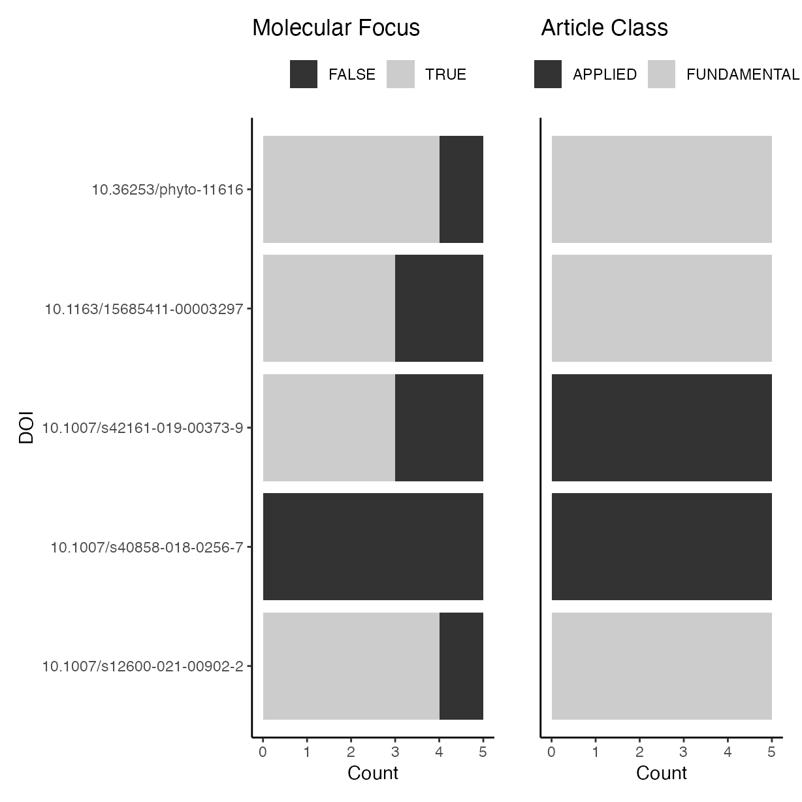
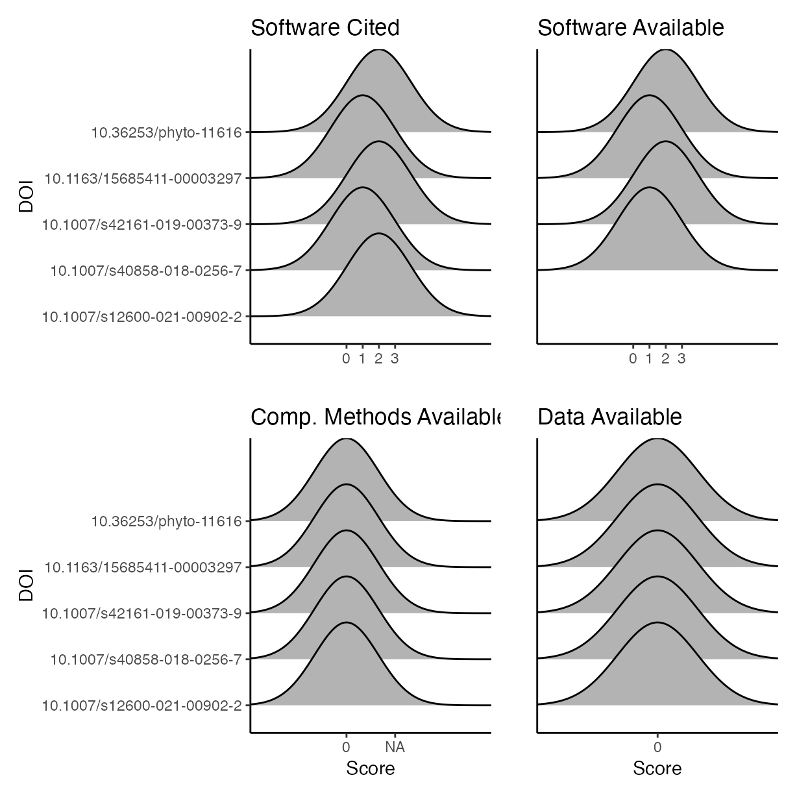

vignettes/e_inter-rater.Rmd
e_inter-rater.RmdThis vignette documents the analysis of the data gathered from
surveying 5 journal articles, which all five authors evaluated for an
inter-rater comparison. Five articles were evaluated by all five authors
to understand the differences between ratings assigned by each of the
paper’s authors. All original scores are kept with corrections being
made to the software_avail column in
software_avail_corrected (by AHS) based on the software
that was recorded as being used in each paper. This step removes some
disagreement between the ratings.
Load libraries used and setting the ggplot2 theme for the document.
library(ggridges)
library(irr)
library(patchwork)
library(psych)
library(tidyverse)
library(pander)
library(Reproducibility.in.Plant.Pathology)
theme_set(theme_classic())Check differences between evaluators in classifying articles as having a molecular focus or fundamental or applied research.
a <- ggplot(rrpp, aes(y = doi,
fill = molecular)) +
geom_bar() +
scale_fill_grey(name = "") +
ylab("DOI") +
xlab("Count") +
ggtitle("Molecular Focus") +
theme(legend.position = "top")
b <- ggplot(rrpp, aes(y = doi,
fill = art_class)) +
geom_bar() +
scale_fill_grey(name = "") +
xlab("Count") +
ylab("") +
theme(
axis.text.y = element_blank(),
axis.ticks.y = element_blank()
) +
ggtitle("Article Class") +
theme(legend.position = "top")
p <- (a | b)
p
Visualise differences between evaluators for the four criteria used to score reproducibility for each paper.
c <- ggplot(rrpp,
aes(y = doi,
x = software_cite)) +
ylab("DOI") +
xlab("") +
geom_density_ridges() +
ggtitle("Software Cited")
d <- ggplot(rrpp,
aes(y = doi,
x = software_avail)) +
ylab("") +
xlab("") +
geom_density_ridges() +
theme(
axis.text.y = element_blank(),
axis.ticks.y = element_blank()
) +
ggtitle("Software Available")
e <- ggplot(rrpp,
aes(y = doi,
x = comp_mthds_avail)) +
geom_density_ridges() +
ylab("DOI") +
xlab("Score") +
ggtitle("Comp. Methods Available")
f <- ggplot(rrpp,
aes(y = doi,
x = data_avail)) +
ylab("") +
xlab("Score") +
theme(axis.text.y = element_blank(),
axis.ticks.y = element_blank()) +
geom_density_ridges() +
ggtitle("Data Available")
p <- (c | d) / (e | f)
p
#> Picking joint bandwidth of 1.98
#> Picking joint bandwidth of 1.97
#> Picking joint bandwidth of 0.658
#> Picking joint bandwidth of 0.652
We can check if most authors found the same software in the papers that were evaluated. Perfect agreement is a 5, below that the software was not clearly and easily detected by the evaluator.
rrpp_software <-
rrpp %>%
transform(software_used = strsplit(software_used_cleaned, ",")) %>%
unnest(software_used) %>%
mutate(software_used = trimws(software_used)) %>%
mutate(software_used = toupper(software_used))
tab <- table(rrpp_software$software_used)
tab_s <- as.data.frame(sort(tab))
tab_s <-
tab_s %>%
arrange(desc(Freq)) %>%
rename("Software" = "Var1", "Frequency" = "Freq")
pander(tab_s)| Software | Frequency |
|---|---|
| GELCOMPAR II | 5 |
| GENALEX | 5 |
| PERMTEST | 5 |
| POPGENE | 5 |
| R | 5 |
| SAS | 5 |
| SDS | 5 |
| SPSS | 5 |
| STATISTICA | 5 |
| STRUCTURE | 5 |
| DARWIN | 4 |
| NTSYS | 3 |
| EXCEL | 1 |
| IDT PRIMER DESIGNER TOOL | 1 |
Here will compute a simple percentage agreement between the reviewers using the irr package.
Percent agreement of software citations criteria rankings.
rrpp %>%
select(doi, assignee, software_cite) %>%
pivot_wider(names_from = assignee, values_from = software_cite) %>%
select(Adam, Emerson, Kaique, Nik, Zach) %>%
as.matrix() %>%
agree() %>%
pander()
rrpp %>%
select(doi, assignee, software_cite) %>%
pivot_wider(names_from = assignee, values_from = software_cite) %>%
select(Adam, Emerson, Kaique, Nik, Zach) %>%
as.matrix() %>%
kappam.fleiss() %>%
pander()Percent agreement of software availability criteria rankings.
rrpp %>%
select(doi, assignee, software_avail) %>%
pivot_wider(names_from = assignee, values_from = software_avail) %>%
select(Adam, Emerson, Kaique, Nik, Zach) %>%
as.matrix() %>%
agree() %>%
pander()
rrpp %>%
select(doi, assignee, software_avail) %>%
pivot_wider(names_from = assignee, values_from = software_avail) %>%
select(Adam, Emerson, Kaique, Nik, Zach) %>%
as.matrix() %>%
kappam.fleiss() %>%
pander()Percent agreement of corrected software availability criteria rankings.
rrpp %>%
select(doi, assignee, software_avail_corrected) %>%
pivot_wider(names_from = assignee, values_from = software_avail_corrected) %>%
select(Adam, Emerson, Kaique, Nik, Zach) %>%
as.matrix() %>%
agree() %>%
pander()
rrpp %>%
select(doi, assignee, software_avail_corrected) %>%
pivot_wider(names_from = assignee, values_from = software_avail_corrected) %>%
select(Adam, Emerson, Kaique, Nik, Zach) %>%
as.matrix() %>%
kappam.fleiss() %>%
pander()Percent agreement of data availability criteria rankings.
rrpp %>%
select(doi, assignee, data_avail) %>%
pivot_wider(names_from = assignee, values_from = data_avail) %>%
select(Adam, Emerson, Kaique, Nik, Zach) %>%
as.matrix() %>%
agree() %>%
pander()
rrpp %>%
select(doi, assignee, data_avail) %>%
pivot_wider(names_from = assignee, values_from = data_avail) %>%
select(Adam, Emerson, Kaique, Nik, Zach) %>%
as.matrix() %>%
kappam.fleiss() %>%
pander()Percent agreement of computational methods availability criteria rankings.
rrpp %>%
select(doi, assignee, comp_mthds_avail) %>%
pivot_wider(names_from = assignee, values_from = comp_mthds_avail) %>%
select(Adam, Emerson, Kaique, Nik, Zach) %>%
as.matrix() %>%
agree() %>%
pander()
rrpp %>%
select(doi, assignee, comp_mthds_avail) %>%
pivot_wider(names_from = assignee, values_from = comp_mthds_avail) %>%
select(Adam, Emerson, Kaique, Nik, Zach) %>%
as.matrix() %>%
kappam.fleiss() %>%
pander()
sessioninfo::session_info()
#> ─ Session info ───────────────────────────────────────────────────────────────
#> setting value
#> version R version 4.4.1 (2024-06-14)
#> os macOS Sonoma 14.6
#> system aarch64, darwin20
#> ui X11
#> language en
#> collate en_US.UTF-8
#> ctype en_US.UTF-8
#> tz Australia/Perth
#> date 2024-08-07
#> pandoc 3.3 @ /opt/homebrew/bin/ (via rmarkdown)
#>
#> ─ Packages ───────────────────────────────────────────────────────────────────
#> package * version date (UTC) lib source
#> bslib 0.8.0 2024-07-29 [1] CRAN (R 4.4.0)
#> cachem 1.1.0 2024-05-16 [1] CRAN (R 4.4.0)
#> cellranger 1.1.0 2016-07-27 [1] CRAN (R 4.4.0)
#> cli 3.6.3 2024-06-21 [1] CRAN (R 4.4.0)
#> colorspace 2.1-1 2024-07-26 [1] CRAN (R 4.4.0)
#> desc 1.4.3 2023-12-10 [1] CRAN (R 4.4.0)
#> digest 0.6.36 2024-06-23 [1] CRAN (R 4.4.0)
#> dplyr * 1.1.4 2023-11-17 [1] CRAN (R 4.4.0)
#> evaluate 0.24.0 2024-06-10 [1] CRAN (R 4.4.0)
#> fansi 1.0.6 2023-12-08 [1] CRAN (R 4.4.0)
#> farver 2.1.2 2024-05-13 [1] CRAN (R 4.4.0)
#> fastmap 1.2.0 2024-05-15 [1] CRAN (R 4.4.0)
#> forcats * 1.0.0 2023-01-29 [1] CRAN (R 4.4.0)
#> fs 1.6.4 2024-04-25 [1] CRAN (R 4.4.0)
#> generics 0.1.3 2022-07-05 [1] CRAN (R 4.4.0)
#> ggplot2 * 3.5.1 2024-04-23 [1] CRAN (R 4.4.0)
#> ggridges * 0.5.6 2024-01-23 [1] CRAN (R 4.4.0)
#> glue 1.7.0 2024-01-09 [1] CRAN (R 4.4.0)
#> gtable 0.3.5 2024-04-22 [1] CRAN (R 4.4.0)
#> highr 0.11 2024-05-26 [1] CRAN (R 4.4.0)
#> hms 1.1.3 2023-03-21 [1] CRAN (R 4.4.0)
#> htmltools 0.5.8.1 2024-04-04 [1] CRAN (R 4.4.0)
#> htmlwidgets 1.6.4 2023-12-06 [1] CRAN (R 4.4.0)
#> irr * 0.84.1 2019-01-26 [1] CRAN (R 4.4.0)
#> jquerylib 0.1.4 2021-04-26 [1] CRAN (R 4.4.0)
#> jsonlite 1.8.8 2023-12-04 [1] CRAN (R 4.4.0)
#> knitr 1.48 2024-07-07 [1] CRAN (R 4.4.0)
#> labeling 0.4.3 2023-08-29 [1] CRAN (R 4.4.0)
#> lattice 0.22-6 2024-03-20 [2] CRAN (R 4.4.1)
#> lifecycle 1.0.4 2023-11-07 [1] CRAN (R 4.4.0)
#> lpSolve * 5.6.20 2023-12-10 [1] CRAN (R 4.4.0)
#> lubridate * 1.9.3 2023-09-27 [1] CRAN (R 4.4.0)
#> magrittr 2.0.3 2022-03-30 [1] CRAN (R 4.4.0)
#> minty 0.0.1 2024-05-22 [1] CRAN (R 4.4.0)
#> mnormt 2.1.1 2022-09-26 [1] CRAN (R 4.4.0)
#> munsell 0.5.1 2024-04-01 [1] CRAN (R 4.4.0)
#> nlme 3.1-164 2023-11-27 [2] CRAN (R 4.4.1)
#> pander * 0.6.5 2022-03-18 [1] CRAN (R 4.4.0)
#> patchwork * 1.2.0 2024-01-08 [1] CRAN (R 4.4.0)
#> pillar 1.9.0 2023-03-22 [1] CRAN (R 4.4.0)
#> pkgconfig 2.0.3 2019-09-22 [1] CRAN (R 4.4.0)
#> pkgdown 2.1.0 2024-07-06 [1] CRAN (R 4.4.0)
#> psych * 2.4.6.26 2024-06-27 [1] CRAN (R 4.4.0)
#> purrr * 1.0.2 2023-08-10 [1] CRAN (R 4.4.0)
#> R6 2.5.1 2021-08-19 [1] CRAN (R 4.4.0)
#> ragg 1.3.2 2024-05-15 [1] CRAN (R 4.4.0)
#> Rcpp 1.0.13 2024-07-17 [1] CRAN (R 4.4.0)
#> readODS 2.3.0 2024-05-26 [1] CRAN (R 4.4.0)
#> readr * 2.1.5 2024-01-10 [1] CRAN (R 4.4.0)
#> Reproducibility.in.Plant.Pathology * 1.0.2 2024-08-06 [1] Github (openplantpathology/Reproducibility_in_Plant_Pathology@240170e)
#> rlang 1.1.4 2024-06-04 [1] CRAN (R 4.4.0)
#> rmarkdown 2.27 2024-05-17 [1] CRAN (R 4.4.0)
#> rstudioapi 0.16.0 2024-03-24 [1] CRAN (R 4.4.0)
#> sass 0.4.9 2024-03-15 [1] CRAN (R 4.4.0)
#> scales 1.3.0 2023-11-28 [1] CRAN (R 4.4.0)
#> sessioninfo 1.2.2 2021-12-06 [1] CRAN (R 4.4.0)
#> stringi 1.8.4 2024-05-06 [1] CRAN (R 4.4.0)
#> stringr * 1.5.1 2023-11-14 [1] CRAN (R 4.4.0)
#> systemfonts 1.1.0 2024-05-15 [1] CRAN (R 4.4.0)
#> textshaping 0.4.0 2024-05-24 [1] CRAN (R 4.4.0)
#> tibble * 3.2.1 2023-03-20 [1] CRAN (R 4.4.0)
#> tidyr * 1.3.1 2024-01-24 [1] CRAN (R 4.4.0)
#> tidyselect 1.2.1 2024-03-11 [1] CRAN (R 4.4.0)
#> tidyverse * 2.0.0 2023-02-22 [1] CRAN (R 4.4.0)
#> timechange 0.3.0 2024-01-18 [1] CRAN (R 4.4.0)
#> tzdb 0.4.0 2023-05-12 [1] CRAN (R 4.4.0)
#> utf8 1.2.4 2023-10-22 [1] CRAN (R 4.4.0)
#> vctrs 0.6.5 2023-12-01 [1] CRAN (R 4.4.0)
#> withr 3.0.1 2024-07-31 [1] CRAN (R 4.4.0)
#> xfun 0.46 2024-07-18 [1] CRAN (R 4.4.0)
#> yaml 2.3.10 2024-07-26 [1] CRAN (R 4.4.0)
#> zip 2.3.1 2024-01-27 [1] CRAN (R 4.4.0)
#>
#> [1] /Users/283204f/Library/R/arm64/4.4/library
#> [2] /Library/Frameworks/R.framework/Versions/4.4-arm64/Resources/library
#>
#> ──────────────────────────────────────────────────────────────────────────────